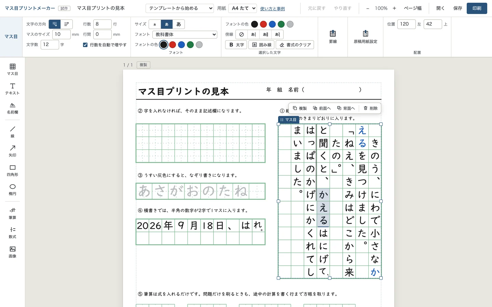
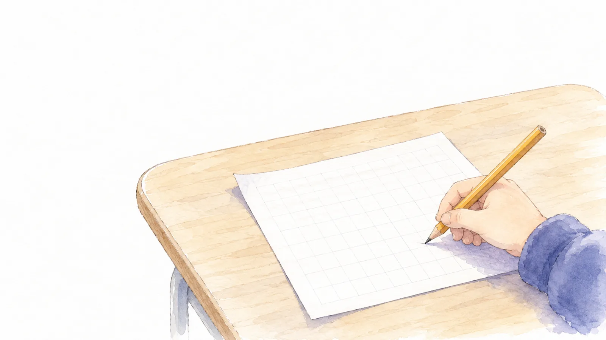
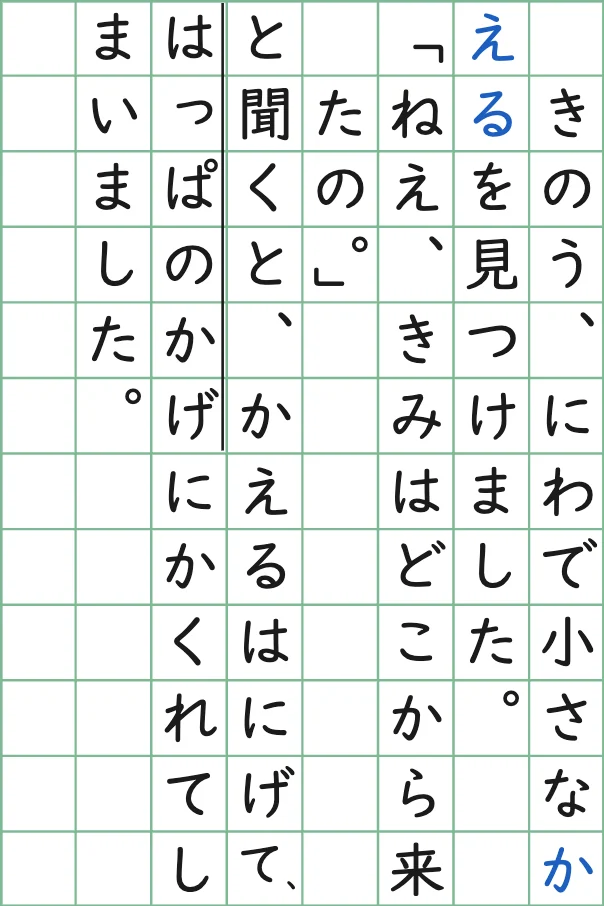
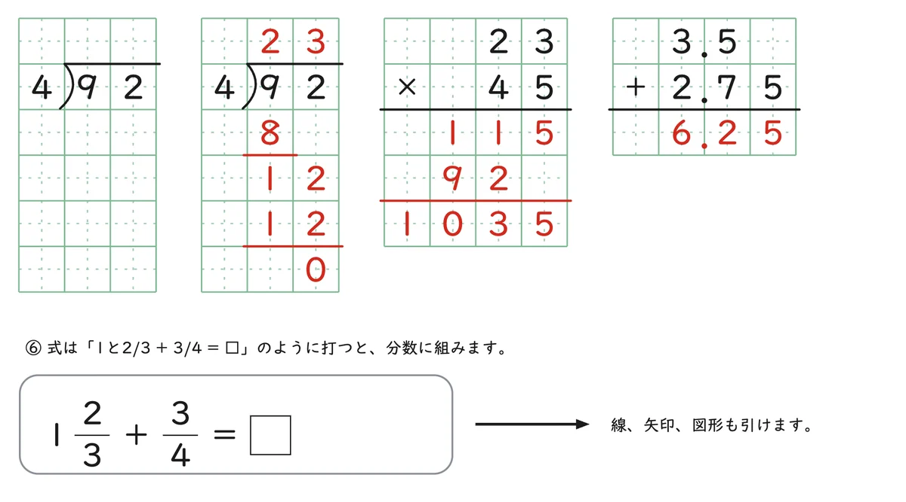
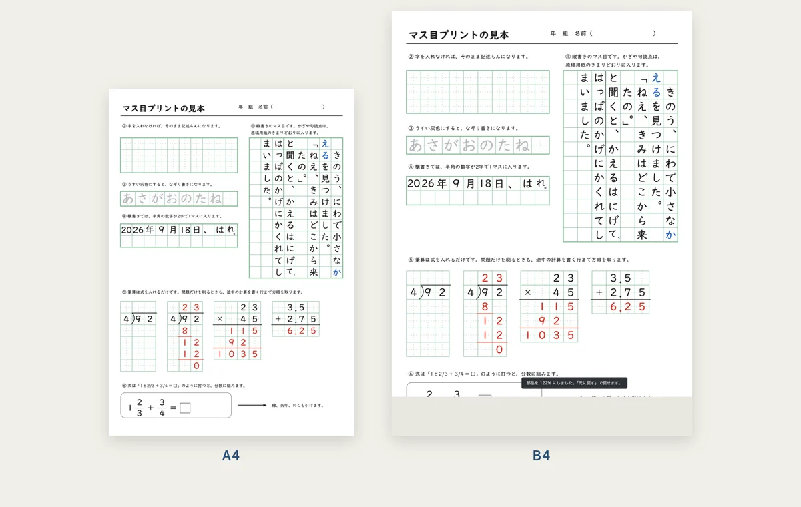
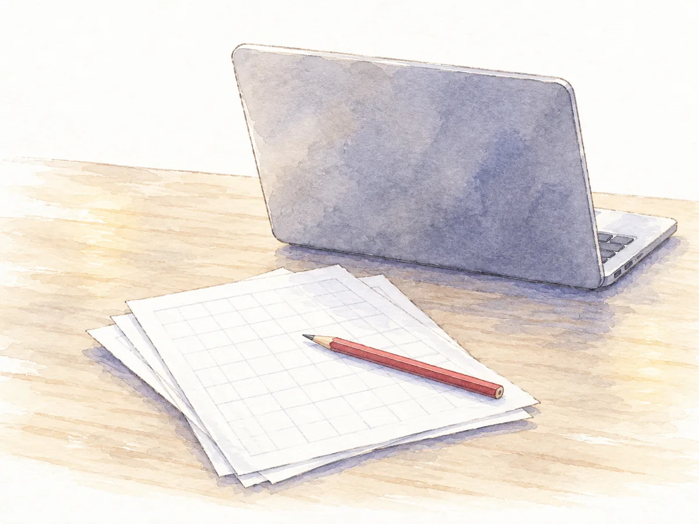
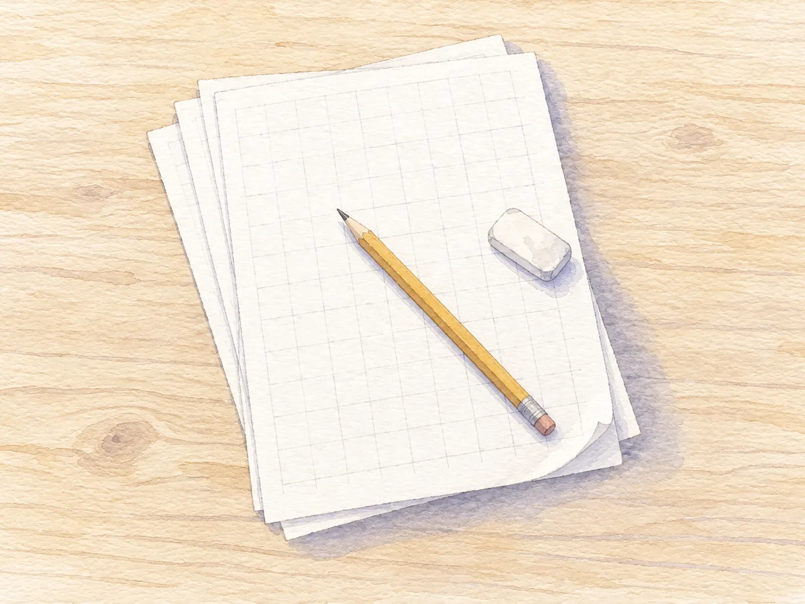

1
マス目の中をクリックして打つ
マス目を置いたら、中をクリックしてそのまま打てます。変換中の字もマス目に出ます。改行すれば次の行へ進みます。字の大きさは、マスの大きさから決まります。
字を入れなければ、子どもが書くための空のマス目になります。うすい灰色の字にすると、なぞり書きになります。


1
マス目を置いたら、中をクリックしてそのまま打てます。変換中の字もマス目に出ます。改行すれば次の行へ進みます。字の大きさは、マスの大きさから決まります。
字を入れなければ、子どもが書くための空のマス目になります。うすい灰色の字にすると、なぞり書きになります。

2
「。」と「」」は同じマスに入ります。行のはじめに来た句読点は、前の行の最後のマスに入ります。小さい「っ」や句読点は、縦書きではマスの右上に寄ります。
会話文の2行目を1マス下げるかどうかなど、教科書や学年で書き方が変わる所は、設定で切りかえられます。

3
「92÷4」と打つと筆算になります。問題だけを刷るときも、子どもが途中の計算を省かずに書ける行数まで方眼を取ります。答えつきにすると、途中の計算まで赤で入ります。
分数は 2/3、帯分数は 1と2/3 と打ちます。数字は教科書体のまま組まれます。

4
用紙は A4、B4、B5、A3 から選べます。たて向きとよこ向きがあります。大きさを変えると、マスも字も同じ割合で大きくなります。コピー機の拡大と同じです。
印刷の画面で送信先を「PDFに保存」にすると、PDFになります。

この道具で作った紙面です。開いて字を打ちかえれば、そのまま使えます。PDF は A4 と B4 を用意しました。例文と問題はすべて自作です。


原稿用紙の書き方には、教科書会社や学年で違う所があります。会話文の2行目を1マス下げる書き方は、光村図書の小学校の教科書に合わせて、はじめからオンにしています。使っている教科書と違うときは、マス目の設定でオフにしてください。
「。」と「」」を同じマスに入れる書き方、横書きで半角の数字を2字で1マスに入れる書き方も、設定で切りかえられます。